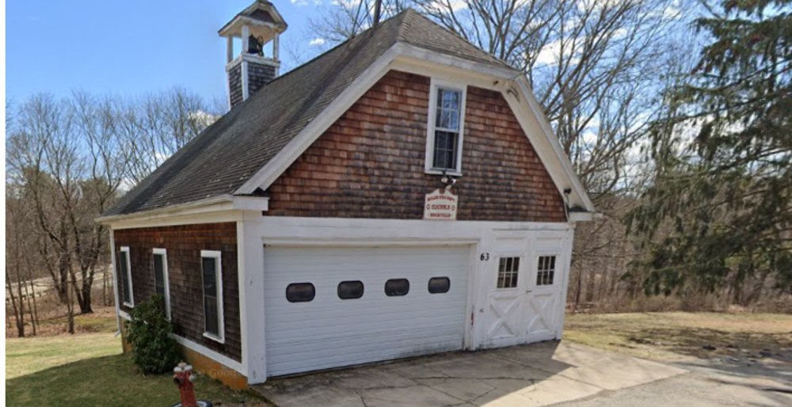

Millis's volunteer fire tradition reaches back to the Niagara Fire Engine Company, formed in 1857 in what was then East Medway. For generations, the town's volunteer companies and their hand-pumped engines were the community's first and only defense against fire. This engine house on Myrtle Street carried that tradition forward and remains part of the Millis Fire Department today, a lasting reminder of the neighbors who volunteered to protect one another.
The original Niagara engine house was built in 1857 by Elijah Partridge for $675 in what was then East Medway; when Millis was incorporated in 1885, the town purchased the engine and house from Medway to carry on its fire-protection tradition. [source]
Photo Gallery
Views of this site along the Millis Historic Trail.